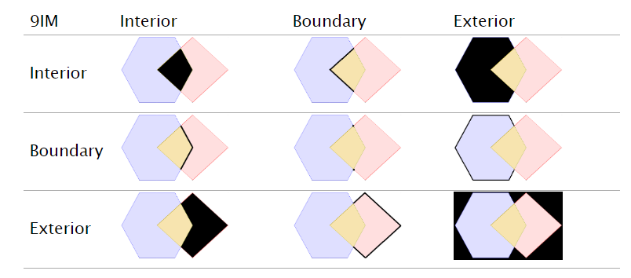
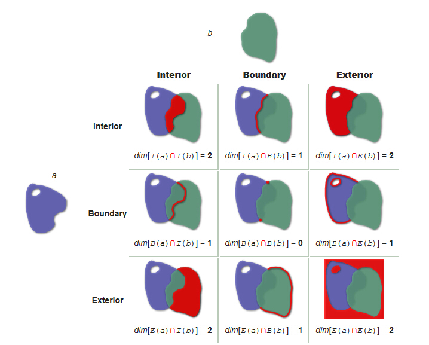

空间关系、DE-9IM和谓词
要判断两个多边形的关系，实际上属于几何图形空间关系判断。几何图形并不只有多边形一种，它包括点、线、面构成的任何图形，两两之间相互关系也有很多种，因此空间关系非常复杂。根据前人的研究，总结出了DE-9IM模型，作为一种空间关系判断的标准。
DE-9IM，全称是Dimensionally Extended nine-Intersection Model (DE-9IM)，是一种拓扑模型，用于描述两个几何图形空间关系的一种标准。在专业领域，通常将每个几何图形分为三部分：外部（exterior),边界（boundary)和内部(interior)。相像一下，一个矩形的三个部分分别是指哪些地方？两个图形的关系判断，实际上就是三个部分的分别判断，因此就会有一个3*3交叉矩阵，这个矩阵就是DE-9IM模型，如下图：
x INTERSECTION y =
| 9IM | Interior | Boundary | Exterior |
|---|---|---|---|
| Interior | x0 INTERSECTION y0 | x0 INTERSECTION dy | x0 INTERSECTION -y |
| Boundary | dx INTERSECTION y0 | dx INTERSECTION dy | dx INTERSECTION -y |
| Exterior | -x INTERSECTION y0 | -x INTERSECTION dy | -x INTERSECTION -y |

网友分解图

其中，a,b分别代表两个面，I,B,E分别表示它的三个部分。Dim()函数表示相交部分的维度。如果相交部分是一个面，则是二维，即dim()=2；如果相交部分是一条线，则为一维，dim()=1；如果相交部分是一些点，则为0维，dim()=0；如果不相交，则dim()=-1;从上往下，从左往右读取这个矩阵，就会有一个字符串，如"212101212"，即将相互关系转换成了一个字符串，最终对字符串进行判断就可以了。上面的图只是许多关系中的一种，画的是相交的情形，所以并没有出现-1的情况。
如果换一种写法，我们将（0，1，2）认为是相交，写为T，-1认为不相交，写为F。则"212101212"变为"TTTTTTTTT"。 实际上这9个值，我们只需要知道其中几个值就能作出判断了，不需要全部知道。比如我们只要知道第一位是T，就能判断两者相交，而后面8位是什么并不关心。不关心是什么值，我们就用来代替，因此，我们只要看到"T*"，就知道两个图形相交。
将关系用专业术语来表达，我们就叫谓词，比如相交、接触、重叠、包含等。关系比较多，定义也是非常精细。我们这里只考虑两个面（两个多边形）的关系，因此，只需要掌握几种关系就可以了。如果需要判断点、线关系的，建议去https://en.wikipedia.org/wiki/DE-9IM 仔细看看，介绍得非常详细。
面之间的关系，主要两种：相交和脱离（不相交），相交又分为接触、重叠、覆盖和相等。
| 谓词 | 返回值 | 描述 |
|---|---|---|
| 相等（Equals) | T*F**FFF* |
边界上的点和内部的点全部重合。属于相交的一种 |
| 脱离（Disjoint) | FF*FF**** |
不相交，与相交相反 |
| 接触（Touches) | FT*******\F**T*****\F***T**** |
只有边界上有共同点，内部没有。属于相交的一种 |
| 覆盖（Covers) | T*****FF*\*T****FF*\***T**FF*\****T*FF* |
b上的每个点都在a上（边界和内部），且所有点都不在a外部。属于相交的一种 |
| 重叠（Overlaps) | T*T***T**\1*T***T** |
a和b相交，且具有一部分共同点，但不是全部内部点。属于相交的一种 |